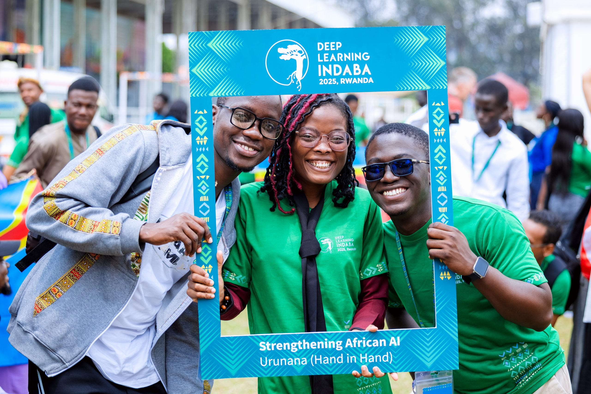

Sélectionné pour le Deep Learning Indaba 2026 ! 🥸🎋 Selected for Deep Learning Indaba 2026! 🥸🎋
C'est une immense joie de vous annoncer que j'ai été sélectionné pour participer au Deep Learning Indaba 2026 !
I am thrilled to announce that I have been selected to attend the Deep Learning Indaba 2026!
Le Deep Learning Indaba est le principal rassemblement annuel de la communauté africaine de l'intelligence artificielle et de l'apprentissage automatique. Lancé en 2017, cet événement panafricain a pour mission de renforcer la recherche et le développement de l'IA en Afrique, en s'assurant que les Africains soient des créateurs et des propriétaires actifs de ces technologies, et non de simples observateurs. Le mot « Indaba » est un terme zoulou et xhosa désignant une assemblée réunie pour discuter des affaires importantes de la communauté.
The Deep Learning Indaba is the premier annual gathering of the African Artificial Intelligence and Machine Learning community. Launched in 2017, this pan-African event aims to strengthen African AI research and development, ensuring that Africans become active creators and owners of these technologies rather than mere observers. The word "Indaba" is a Zulu and Xhosa term for a gathering to discuss important community matters.
L'édition 2026 : Lagos, Nigeria The 2026 Edition: Lagos, Nigeria
Cette année, la grande rencontre annuelle se tiendra du 02 au 07 août 2026 à l'Université Pan-Atlantique à Lagos, au Nigeria.
This year, the flagship annual gathering will take place from August 2nd to 7th, 2026, at the Pan-Atlantic University in Lagos, Nigeria.
Le thème retenu, Sovereign Intelligence (L'intelligence souveraine), met l'accent sur la capacité de l'Afrique à concevoir, gérer et orienter ses propres systèmes et données face à l'avènement mondial de l'AGI (Intelligence Artificielle Générale).
This year's theme, Sovereign Intelligence, highlights Africa's capacity to build, manage, and guide its own systems and data in the wake of the global rise of AGI (Artificial General Intelligence).

À quoi s'attendre ? What to expect?
L'Indaba s'organise autour d'activités clés de haut niveau :
The Indaba is structured around high-level core tracks:
- Sessions de tutoriels & Ateliers thématiques : Des sessions pratiques approfondies, incluant des thématiques cruciales comme la santé (avec Data Science for Health in Africa).
- Recherche & Excellence : Des présentations de papiers scientifiques, la mise en avant de la collecte de jeux de données africains pour résoudre des défis locaux (agriculture, finance, santé et surtout l'accès aux langues locales), ainsi que la remise de prix d'excellence.
- Réseautage d'envergure : La plus grande opportunité du continent pour connecter étudiants, professeurs, entrepreneurs et géants de la Tech mondiale afin de bâtir des partenariats et débloquer des opportunités académiques.
- Tutorial Sessions & Workshops: Hands-on, deep-dive learning experiences, covering critical sectors such as healthcare (with Data Science for Health in Africa).
- Research & Excellence: Spotlighting research paper presentations, pushing forward the collection of local African datasets to tackle specific challenges (agriculture, finance, healthcare, and especially local languages), and celebrating outstanding contributions.
- Massive Networking: The continent's biggest crossroads bringing together students, professors, entrepreneurs, and global Tech giants to trigger future collaborations and academic breakthroughs.
💡 Après qu'Arix m'a chanté les louanges et les merveilles de cet événement pendant deux ans, le moment est enfin venu pour moi de m'y rendre et de le vivre pleinement. J'ai vraiment hâte d'y prendre part et de tirer le maximum de cette expérience unique !
💡 After hearing Arix praise the wonders of this event for the past two years, the time has finally come for me to step in and experience it live. I cannot wait to attend and make the absolute most out of it!